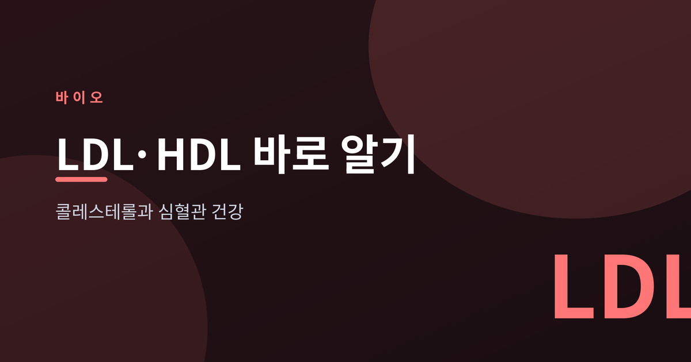
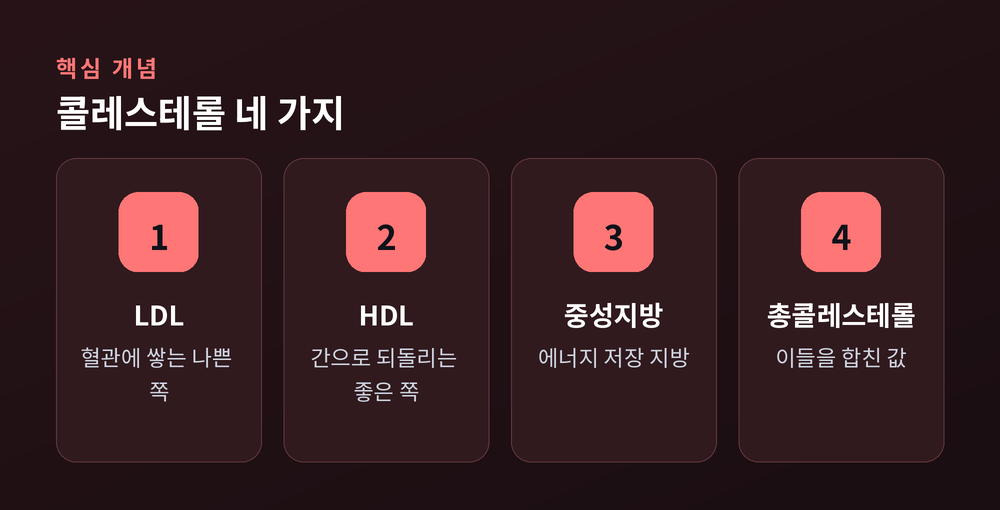
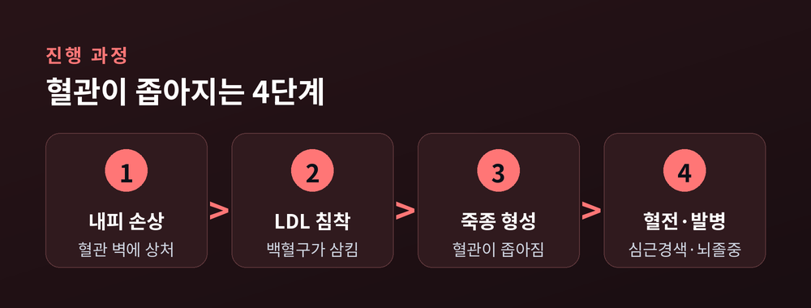
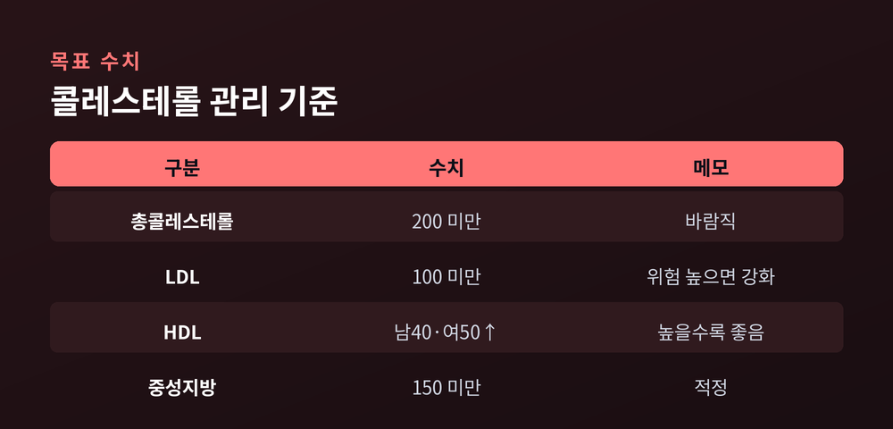

LDL·HDL 바로 알기

건강검진 결과지에서 LDL과 HDL이라는 글자를 보고 고개를 갸웃하신 분이 많을 것입니다.
이번 글에서는 콜레스테롤이 무엇인지, 어떤 숫자를 봐야 하는지 차분히 정리해 보겠습니다.
결론부터 말씀드리면, 핵심은 "LDL은 낮게, HDL은 높게"입니다.
콜레스테롤은 세포막과 호르몬을 만드는 재료입니다.
몸에 반드시 필요한 지방 성분이라는 뜻입니다.
다만 물에 녹지 않아 단백질에 실려 혈액을 이동합니다.
이때 어떤 운반체에 실리느냐에 따라 이름이 달라집니다.

LDL은 콜레스테롤을 혈관 벽으로 나르는 '나쁜' 쪽입니다.
HDL은 쌓인 콜레스테롤을 간으로 되돌리는 '좋은' 쪽입니다.
여기에 에너지 저장 지방인 중성지방, 그리고 이들을 합친 총콜레스테롤이 검사지에 함께 찍힙니다.
혈관 안쪽 벽에 작은 상처가 나면, 그 자리에 LDL과 백혈구가 모입니다.
백혈구가 산화된 LDL을 삼키며 지방 덩어리로 변하고, 벽에 죽종이 쌓입니다.
죽종이 커질수록 혈관은 좁아집니다.
예전엔 매끄럽게 흐르던 피가, 지금은 좁은 길을 힘겹게 지나는 셈입니다.

이 죽종이 어느 날 터지면 혈전이 생깁니다.
그렇게 막힌 곳이 심장이면 심근경색, 뇌면 뇌졸중으로 이어집니다.
조용히 진행되다 큰일이 벌어지는 것이 동맥경화의 무서운 점입니다.
아래는 일반적인 기준입니다. (단위 mg/dL)

| 구분 | 목표 수치 | 메모 |
|---|---|---|
| 총콜레스테롤 | 200 미만 | 바람직 |
| LDL | 100 미만 | 위험 높을수록 강화 |
| HDL | 남 40·여 50 이상 | 높을수록 좋음 |
| 중성지방 | 150 미만 | 적정 |
당뇨나 심혈관질환 병력이 있으면 LDL 목표는 70 미만으로 더 낮아집니다.
같은 숫자라도 사람마다 의미가 다르다는 점을 기억하시면 좋겠습니다.
식이가 기본입니다.
버터·팜유 같은 포화지방과 트랜스지방을 줄이고, 올리브유·등푸른 생선·채소를 늘리시길 권합니다.
운동도 중요합니다만, 한 가지는 짚고 넘어가야 합니다.
"운동만 열심히 하면 콜레스테롤이 뚝 떨어진다"고 믿는 분이 많지만, 운동만으로 LDL을 크게 낮추기는 어렵습니다.
그럼에도 유산소 운동은 심혈관을 지키는 데 빠질 수 없는 습관입니다.
필요하면 스타틴 같은 약을 씁니다.
심근경색과 뇌졸중을 줄이는 효과가 임상으로 입증된 약이며, 대부분 안전하게 복용합니다.
끝으로 한 마디만 더 드리겠습니다.
콜레스테롤 관리는 특별한 비법이 아니라, 숫자를 알고 꾸준히 돌보는 일에 가깝습니다.
"LDL은 낮게, HDL은 높게" — 이 한 줄만 기억해도 절반은 시작한 셈입니다.
다만 이 글은 일반적인 건강 정보일 뿐입니다.
정확한 진단과 치료는 반드시 의료진과 상담하시길 바랍니다.
내 검진 결과지의 숫자가 오늘부터 조금 다르게 보이신다면, 그것으로 충분합니다.